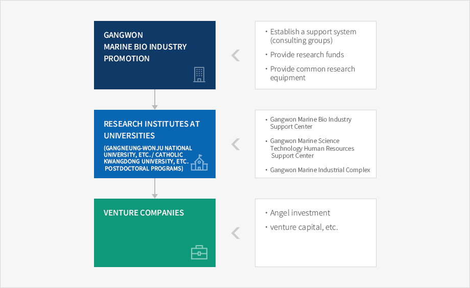

- Home
- Business Opportunities
- Marine Biology
Characteristics of Marine Biology Industry
-
The marine biology industry is a bio engineering that modify or utilize all or part of a specific ocean life. But it is not a field of study, but the methods or technology utilized in solving a problem or developing products or process.
- Marine biology industry is a industry that utilize the raw materials in ocean. As not many researches have been made in this part, it has high potential of development and growth. Also, researches are active in the marine microorganisms, marine microalgae, marine flora and marine fauna.
Current Status of Gangwon's Marine Biology Industry
- Since 1998, marine biology R&D centers have been expanded and the research support fundamentals for marine biology are being enhanced.
- Gangneung University Venture Center, Gangneung S/W Support Center, Gangneung University marine biology research programs, massive production & discharge of marine young plants, Gangwon College marine biology program, Gangwon College Venture Center are curently under works.
-
Gangneung University Venture Center & marine biology research programs
- A variety of research programs shall be put in place by the East Coast Marine Biology Resources Research Center by the end of 2005 for More researches for developing fishery industry on east coast, building cooperations between fishery research centers on east coast and improving income sources for fishermen by developing new products and creating high value-added in regional fishery products.
-
Expanding the Gangneung S/W Support Center
- Plan is in place to expand the Gangneung S/W Support Center, that was completed in 1999 and growing into the center of S/W on the east coastal area.
-
Gangwon College Venture Center & marine biology programs
- Providing technologies and business assistance to new business starters in fishery and marine biology industry, and researches are currently active in production of high value-added marine bioresources using the deep seawater and in application of cage-culture of coastal dyke for breakwater embankment and of submersible (2001-2005).
Central Government's Plan to Foster Marine Biology Industry
-
The Ministry of Maritime & Fishery is currently promoting marine resources R&D activities in three fields of high-tech fishery technology developing project, fishery experiment research and advanced marine bio resources research.
- Biology-related technology R&D (1995?2004, 24.5 bil.won), fishery R&D, advanced marine bio resources research (1 step: 1999 ~ 2001, 1.4 bil.won)
-
In 1999, 1,680 million won of budget have been invested in Korea's major marine resources preservation & management system," " marine bio genes bank project," "researches for expanding advanced marine pisces products" to build marine biology infrastructure.
- A maritime fishery venture foundation shall be launched and operated to firm the foundations for developing marine biology through active support of technology R&D and business foundations by small-and-medium enterprises and ventures in marine and fishery industry, and to focus resources into supporting advanced knowledge-based industries with great growth potential.
Requirements for Nurturing Marine Biology Industry
-
Expanded cooperation between industry and academia: technlogy development falls behind other countries due to lack of recogintion of and investment into the marine biology.
- Therefore, it is required to expand programs for efficient cooperation between industry and academia to establish an effective R&D system.
- Brain-training: a training programs to equip marine biology industry with research manpower.
- Marine Biology Industry Center: a supporting system for incubating ordinary businesses and ventures in marine biology industry.
- Encouraging marine venture start-up: a system to nurture bio industry ventures in universities and enterprises through business start-up in laboratories and spin-off start-ups.
Gangwon-do’s Marine Bio Industry Promotional Strategies
-
Gangwon-do’s marine bio industry is promoted by connecting R&D projects, which have been on the rise since 1998, and the Startup Promotion Center and marine bio related research programs facilitated by Gangneung-Wonju National University, Gangwon State University, and Catholic Kwangdong University, etc.

-
Gangwon Marine Bio Industry Promotion
- Establish a support system (consulting groups)
- Provide research funds
- Provide common research equipment
-
Research Institutes at Universities(Gangneung-Wonju National University, etc. Catholic Kwangdong University, etc. postdoctoral programs)
- Gangwon Marine Bio Industry Support Center
- Gangwon Marine Science Technology Human Resources Support Center
- Gangwon Marine Industrial Complex
-
Venture Companies
- Angel investment
- venture capital, etc.

-
Building business environment where a company that finished the Venture Incubating system can relocate itself into the marine biology support center to continue R&D activities.
- Providing business conditions and spaces where enterprises and ventures that had grown out of the Maritime Biology Support Center can relocate themselves to continue production activities by making use of the Maritime Science & Technology Manpower Support Center and strengthening professional workforce.
-
Propsering maritime industries in Gangwon are marine biology (ocean life, culturing and fishery), maritime-related S/W and marine environmental block, marine environmental bloc, coastal dyke for breakwater embankment, marine-related consulting, maritime IT, ocean measurement sensors and devices, maritime engineering, maritime energy (off-shore wave energy, temperature difference energy and current energy), seawater-freshing technology and coastal waterfront, marina-related technology, maritime tourism-related information industry and coastal renovation.
- As for the new technology R&D of marine biology, marine biology R&D system has been built around colleges of medicine.
- Divided into marine bio engineering, fishery engineering and culture engineering, joint research activities are made in marine cultureing (Gangneung Univ.), fishery science (Gangwon Univ.) and marine biology (college of medicine in Gwandong Univ.) with colleges and universities in the region.
-
Providing business conditions where, at the innital stage, a company that has completed the Venture Incubating program can relocate itself into marine biology industry support center to continue R&D activities.
- Getting professional manpower supplied by maritime science & technology manpower support center
- Seeking to provide physical spaces to enterprises and venture than grows out of maritime biology support center for production activities for the near future.
- Maritime Industry Center is specialized into maritime environment technology, maritime IT R&D, marine biology research, marine culturing research and fishery science research (location of the center shall be selected after consideration of the regional busines conditions).
-
Building information sharing system with new material industry for marine biology processing devices.
- Nurturing marine biology industry and new material industry(Fine Ceramics) as the main industry of east Gangwon.
Business Environment
- In line with the nationwide drive of maritime industry fostering plan by the Ministry of Maritime and Fishery, placing the marine biology venture center on the east coastal area and nurturing ventures in marine biology industry.
- Establishing labor pool through securing high-educated workforce in marine biology industry and training the existing manpower.
- In the long run, a marine biology industrial complex spanning 5~10,000 pyeong in size shall be constructed in the adjacent industrial complex, where companies incubated in the Gangneung Marine Biology Support Center.